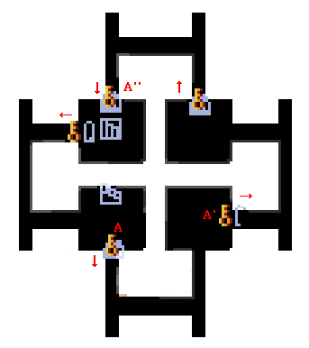
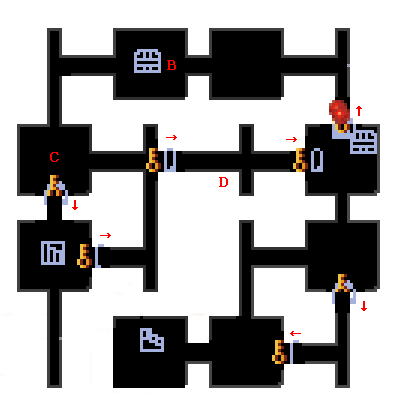
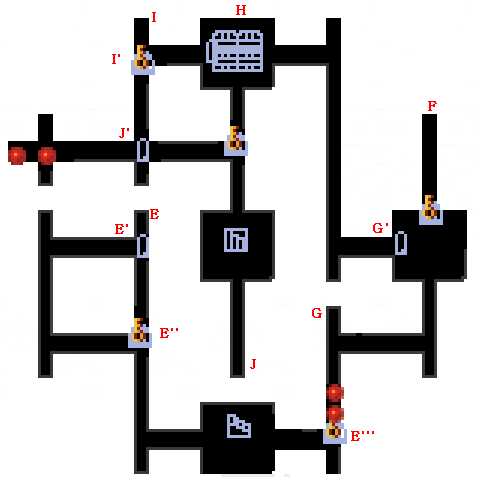

| 概要 | 情報 | アイテム一覧 |
| 敵キャラ一覧 | ステージ一覧 | 夢幻迷宮について |
| 攻略チャート | Zwei!! 攻略へ |
| ステージ選択へ |
ヒポリタの丘 Lv.21
|  | |
| 矢印 | 一方通行の扉なので、開く向きを表しています。 |
| A | A、A'、A''の扉を開くと、敵が現れます。 |
|  | |
| 矢印 | 扉が一方通行のため、開く向きを表しています。 |
| B | 部屋Bにある宝箱を開くと、敵が現れます。 |
| C | 部屋Cの中央へ移動すると、敵が突然現れます。 |
| D | D地点へ移動すると、敵が現れます。 面倒くさがらずに、移動して全て倒しましょう。 |
|  | |
E |
この階層へ移動したら、E地点へ移動し、レバースイッチをONにします。 そして、E'''地点へ向かいます。 |
| F |
G地点のレバースイッチは無視し、F地点のレバースイッチをONにします。 すると、通路に敵が現れるので、それを倒します。 その後、F地点のレバースイッチをOFFにします。その後、G地点へ移動してください。 |
| G |
G地点のレバースイッチをONにし、G'地点へ移動します。 |
| H |
H地点では、右下以外の宝箱を開くと敵が現れます。 帰りに中身を回収すればいいので、右下の宝箱以外を開けましょう。 敵を倒したら、I地点へ移動します。 |
| I |
I地点のレバースイッチをONにして、J地点へ移動します。 |
| J |
J地点のレバースイッチをONにし、J''地点を抜け、通路にいる敵を倒します。 その後、階段へ移動しましょう。 |
| ステージ選択へ |
| 概要 | 情報 | アイテム一覧 |
| 敵キャラ一覧 | ステージ一覧 | 夢幻迷宮について |
| 攻略チャート | Zwei!! 攻略へ |
Zwei!!
| 目次へ戻る | ページの上部へ |